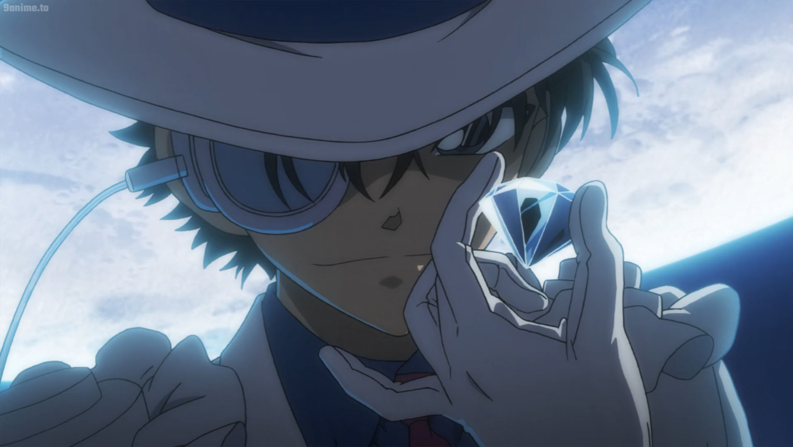
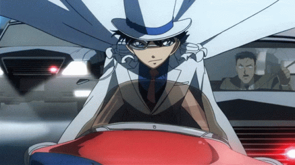

Kaito Kid berulah lagi kini dia mencuri perhiasan dari abad pertengahan.
Kaito Kid yang diceritakan sebagai pencuri handal menjadi sosok yang disukai oleh para penggemar Detektif Conan. Ia terakhir muncul di Detective Conan Movie 19: Sunflowers of Inferno. Berbeda dengan cerita sebelumnya yang mana antara Conan dan Kid saling menjadi rival, kali ini mereka diharuskan menjadi kawan dan melakukan banyak kerja sama.
Berlatar di Singapura dengan mengedepankan kasus pembunuhan yang disertai dengan ledakan bom. Sebenarnya awal cerita yang seperti ini sudah cukup sering menjadi pembuka sehingga tidak begitu istimewa. Ceritanya berlanjut ketika Conan meminta obat penawar kepada Haibara agar ia bisa kembali ke tubuhnya semula. Ia ingin menjadi Shinichi Kudo agar bisa ikut Ran, Sonoko dan Kogoro ke Singapura untuk menghadiri pertandingan karate Kyogoku, pacar Sonoko. Karena tidak diizinkan, terpaksa Conan pulang dengan tangan kosong.
Di jalan sepi malam itu saat perjalanan pulang, Conan bertemu dengan Kaito Kid yang sedang menyamar menjadi Ran. Ia dibuat tidur hingga ketika sadar tiba-tiba sudah berada di Singapura. Rasa kagetnya tidak berhenti di sana, namun ketika melihat ada "Shinichi Kudo" sedang bersama Ran dan Sonoko. Padahal, dia lah Shinichi Kudo yang asli.
Ternyata, itu adalah Kaito Kid yang menyamar. Kid sengaja datang ke Singapura dan membawa Conan untuk memecahkan kasus pembunuhan yang ada di prolog tadi. Apalagi di kasus pembunuhan itu Kid seakan dituduh sebagai pembunuhnya karena ada kartu dirinya yang tertinggal di sana.
Di komik pernah diceritakan sebelumnya bahwa Kyogoku pernah berduel dengan Kid. Kali ini pun mereka dipertemukan kembali dengan momen yang akan membuat penonton tertawa.